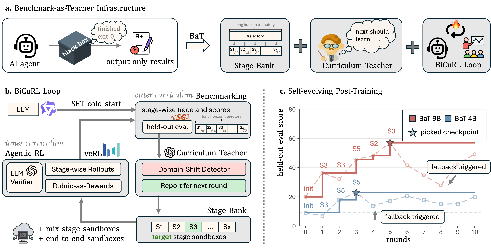
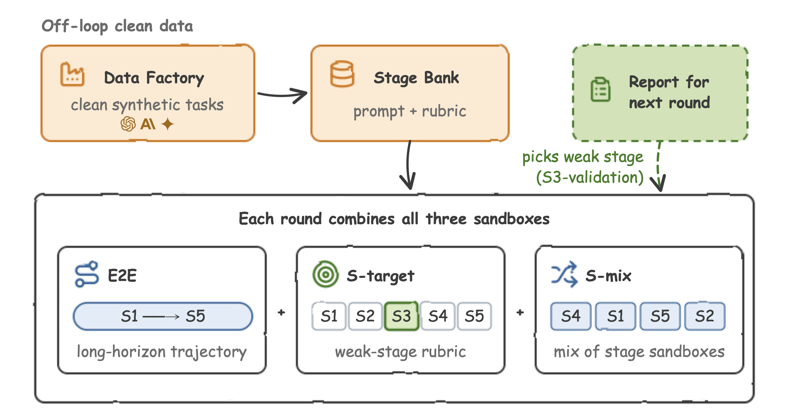
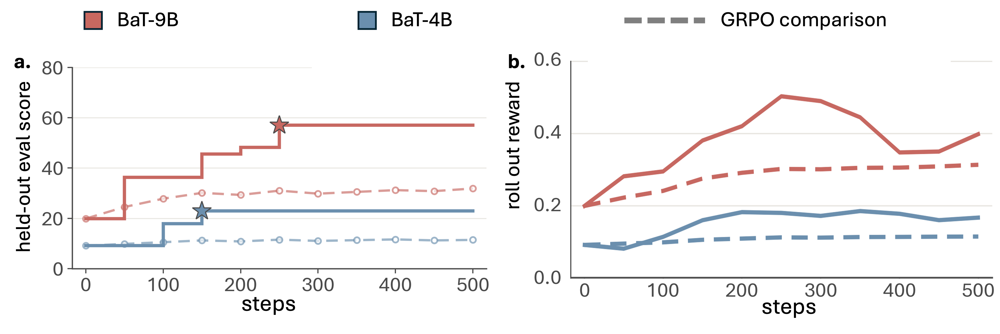
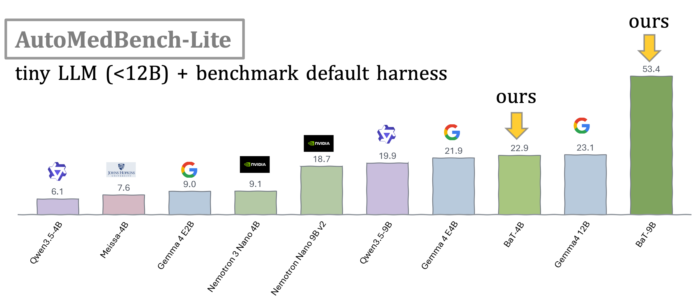
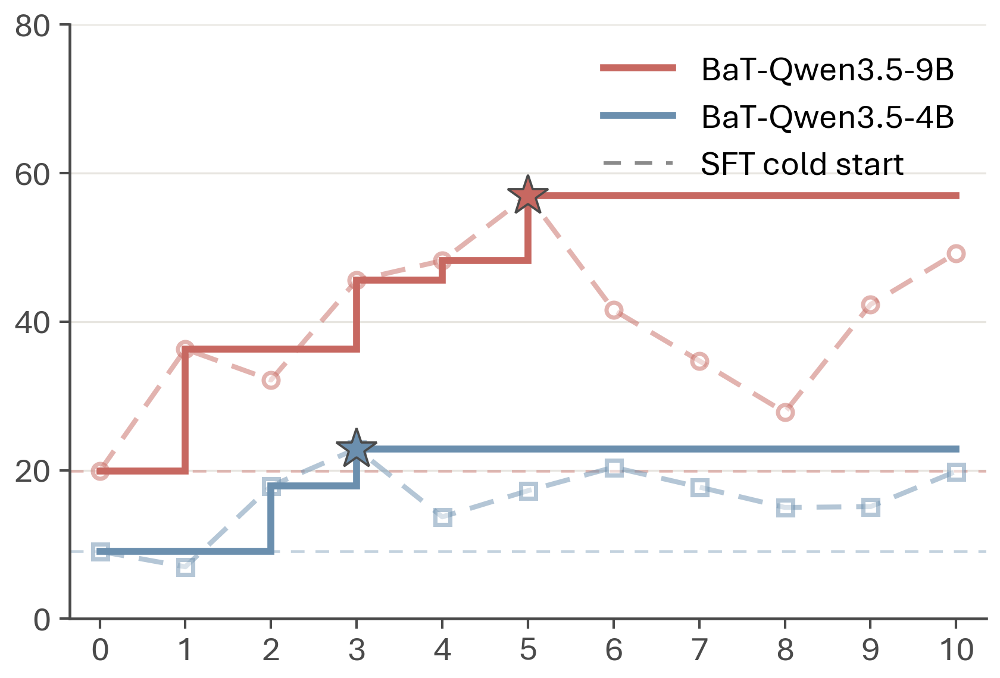
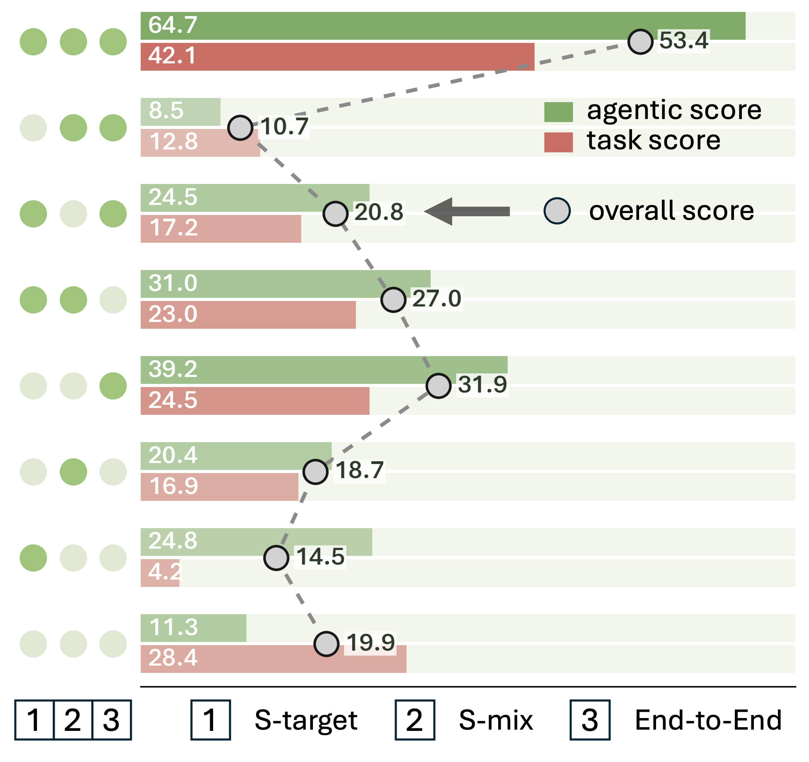

Abstract
Closing the Loop Between Evaluation and Training
Long-horizon agents are beginning to automate complete workflows that produce code, reports, and research artifacts. Medical imaging workflows are multi-stage and data-sensitive, while expert trajectories remain scarce and difficult to share. Structured benchmarks can localize failures through stage-level rubrics, but standard post-training discards these diagnostics before the next training round.
We present Benchmark-as-Teacher (BaT), a recursive self-improvement system for agent post-training. BaT contains two linked components: the asynchronous Stage Bank data pipeline and BiCuRL (Bilevel Curriculum Reinforcement Learning), its self-improving post-training method. Stage Bank synthesizes content-isolated training states outside the policy-update loop. BiCuRL uses a fixed held-out evaluation to select the next stage curriculum, verifies rollouts with task rubrics, updates the policy with GRPO, and returns the candidate checkpoint to evaluation.
On AutoMedBench-Lite, BaT-4B and BaT-9B more than double the Overall scores of their Qwen Instruct baselines. BaT-9B Agent reaches 79.6 Overall, exceeding Claude Opus 4.6 with Claude Code at 77.5. We release the code at github.com/AutoMedBench/Benchmark-as-Teacher.
Method
BaT: Stage Bank, Curriculum Teacher, BiCuRL Loop
A black-box agent evaluation returns output-only results: finished, exit 0, a grade. BaT instead keeps the stage-wise trace and turns it into three components that together close the evaluation-to-training loop.

Figure 1. The Benchmark-as-Teacher system. (a) Top: conceptual overview — BaT turns the usual output-only benchmark into training infrastructure with the Stage Bank data-synthesis pipeline, Curriculum Teacher, and BiCuRL post-training method. (b) Lower left: the BiCuRL closed loop — after an SFT cold start, benchmarking splits into stage-wise scores that feed the Curriculum Teacher; the sandbox pool selects targeted-stage (S-target), mix-stage (S-mix), and end-to-end (E2E) sandboxes; the agent rolls out, an LLM verifier scores with rubric-as-rewards, and GRPO updates the policy. (c) Lower right: training rounds — dashed curves show each round's evaluation, solid step lines track the best checkpoint so far, and stars mark the auto-selected best checkpoints.Outer Curriculum: Diagnose, Don't Copy
- Benchmark: the current checkpoint is evaluated on the full
S1–S5workflow plus the track-native task output, over seven tracks and ten repeats per track. - Prescribe: the curriculum teacher reads stage scores and failure types,
then sets a single variable — the
target_stageused for state selection. It never generates or rewrites training rows. - Gate: a domain-shift detector and promotion gate decide whether the new checkpoint is kept or the round falls back.
Inner Curriculum: Rubric-as-Reward GRPO
- Reset: each rollout starts from a Stage Bank state, so the policy practices the decision that actually failed rather than replaying a full trajectory to reach it.
- Score: a rubric judge scores fresh continuations against the AutoMedBench contract; sandbox, verifier, and report execution calibrate and audit that reward.
- Update: stock GRPO, with advantages normalized only among the
Kcontinuations sampled from the samestate_id.
bootstrap once : base model -> cold-start SFT
async/off-loop : safe data factory -> leakage gate -> ready Stage Bank
main loop : AutoMedBench -> diagnose -> set S target -> Stage Bank
-> K rollouts -> rubric reward -> stock GRPO
-> checkpoint -> evaluate again
Cold-start SFT runs exactly once. Every later BaT round is stage-wise GRPO and never consumes assistant-completion targets.
Stage Bank
Clean Practice States, Built Off the Critical Path

Figure 3. The three Stage Bank sandboxes. The Data Factory fills the Stage Bank with clean synthetic tasks, and the report for the next round only picks the weak stage.E2E trains on the whole unsegmented trajectory,
S-target applies the weak-stage rubric, and S-mix blends stage sandboxes
from the other stages. No evaluation task content enters training rows.
Stage Bank holds 20,299 candidate prompt states that support rubric scoring, projected
from a content-isolated source pool into the three sandboxes. Synthesis and validation run
asynchronously outside the policy-update loop, so building the next round's data never blocks a GPU,
and every row passes a leakage preflight before it can enter the bank.
E2E Pool
Starts at the task beginning. Preserves complete S1–S5 execution
and final completion, which is what the benchmark ultimately scores.
S-target Pool
Cuts into the weakest stage prescribed by the report. Improves the next action and the remaining work for that stage specifically.
S-mix Pool
Cuts across all stages as rehearsal. Prevents the cross-stage forgetting that single-stage practice reliably induces.
Only aggregate stage scores and one Overall score cross the evaluation boundary; task IDs, answers, paths, reports, and traces remain held out. The controller evaluation scores and discards its own rollouts.
Main Results
A 9B Agent at Frontier-Agent Quality
AutoMedBench-Lite reports Overall = 0.5 × Task + 0.5 × Agentic over seven tracks and
ten repeats per track. We report policy-level post-training runs here, and full agent-system runs in
the teaser above; the two levels are kept separate and not directly compared.

Figure 4. BiCuRL more than doubles the baselines. (a) Each score is the mean over the seven track-level means. Baseline denotes the Qwen3.5 Instruct checkpoint, SFT the supervised cold start, GRPO group-relative policy optimization with a single final reward, and BiCuRL stage-guided post-training inside the full BaT loop. (b) BaT keeps improving across rounds while GRPO with one final reward saturates early; solid step lines track the best BaT checkpoint so far and stars mark the selected checkpoints.| Training recipe | Task | Agentic | Overall |
|---|---|---|---|
| Qwen3.5-4B baseline | 0.0 | 12.1 | 6.1 |
| Qwen3.5-4B + SFT | 25.4 | 10.8 | 18.1 |
| Qwen3.5-4B + GRPO | 6.9 | 15.9 | 11.4 |
| BaT-Qwen3.5-4B | 17.0 | 28.8 | 22.9 |
| Qwen3.5-9B baseline | 28.4 | 11.3 | 19.9 |
| Qwen3.5-9B + SFT | 4.1 | 21.6 | 12.9 |
| Qwen3.5-9B + GRPO | 24.5 | 39.2 | 31.9 |
| BaT-Qwen3.5-9B | 42.1 | 64.7 | 53.4 |
Policy-level AutoMedBench-Lite scores (Table 2), on a 0–100 scale with one decimal. Bold rows are the BiCuRL / BaT policies.
Figure 6 · BaT-9B Ranks First among Tiny Local LLMs
Local deployment keeps medical data inside the research environment, so we evaluate a range of representative open-weight models under the same default OpenHands runner and benchmark protocol. Here tiny local LLM means at most 12B parameters.

Figure 6. First among tiny local LLMs. BaT-9B ranks first at 53.4 Overall — a 2× lead over second place — and BaT-4B ranks third among ten tiny local LLMs (≤ 12B). Bars report AutoMedBench-Lite Overall under the same default runner.Self-Evolving Post-Training
Rounds That Improve, or Fall Back
Left to itself, an evaluate-then-train loop drifts: a candidate that overfits one stage can undo earlier progress. BiCuRL keeps a checkpoint-retention and fallback rule between rounds, so the best-so-far trajectory preserves each accepted gain even when a later candidate scores lower.

Best-so-far across rounds. At both sizes, the retained BiCuRL checkpoint passes the corresponding GRPO score early in training, and the best-so-far staircases preserve each accepted gain through round ten. The raw round curves fluctuate, which motivates the checkpoint retention and fallback in the outer loop.Ablation
All Three Pools, Or None of the Gain
The matched pool ablation changes one variable: which of the S-target,
S-mix, and E2E pools enters GRPO, holding the rest of the pipeline fixed on
Qwen3.5-9B.

Figure 5. The full sandbox mix leads. The dot matrix marks which pools enter training; green bars show Agentic, red bars show Task, and gray circles show Overall. The full three-pool run leads with 53.4 Overall. The strongest partial mix, E2E alone, reaches 31.9 — a 21.5-point gap — and every drop-one-pool run trails the full mix by at least 26 points.Infrastructure
Training Infrastructure, Not a Single Recipe
The contribution is the benchmark-to-training infrastructure, not a new optimizer. BaT uses standard GRPO and changes what becomes a task, how sampled continuations are scored, and how the evaluation-to-training loop is closed.
Synthesis Never Blocks a GPU
Stage Bank is not a preprocessing step — it runs as an asynchronous service outside the
policy-update loop. While round r trains, the factory is already synthesizing
round r+1, and only versioned, leakage-checked states cross the
boundary.
Model- and Domain-Agnostic
Nothing in the loop is specific to a model family or to medicine. It needs a benchmark with ordered stage boundaries, public rubric and evidence contracts, and a fixed evaluation — plus a sandbox that can be reset and a judge that can score a continuation.
Swappable Serving
Training and rollouts run on eight NVIDIA A100 GPUs. The serving layer supports
SGLang and vLLM, with SGLang the default engine for agentic
tasks and a 256K-token context limit.
Citation
Benchmark-as-Teacher
If you find the benchmark-to-training loop useful for your research, please consider citing our work.
@article{liu2026bat,
title = {BaT: Towards Self-Evolving Medical Research Agent with Stage Rubrics},
author = {Liu, Junqi and He, Yufan and He, Yexiao and Guo, Pengfei and Yang, Dong and
Myronenko, Andriy and Zhao, Can and Ye, Hanrong and Qi, Tianhao and
Zhou, Yuyin and Xu, Daguang and Tang, Yucheng},
journal = {arXiv preprint arXiv:2608.16211},
year = {2026},
}